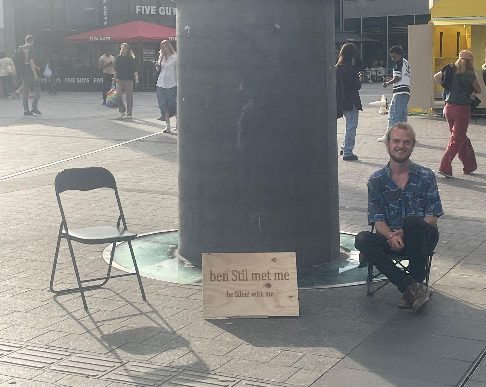
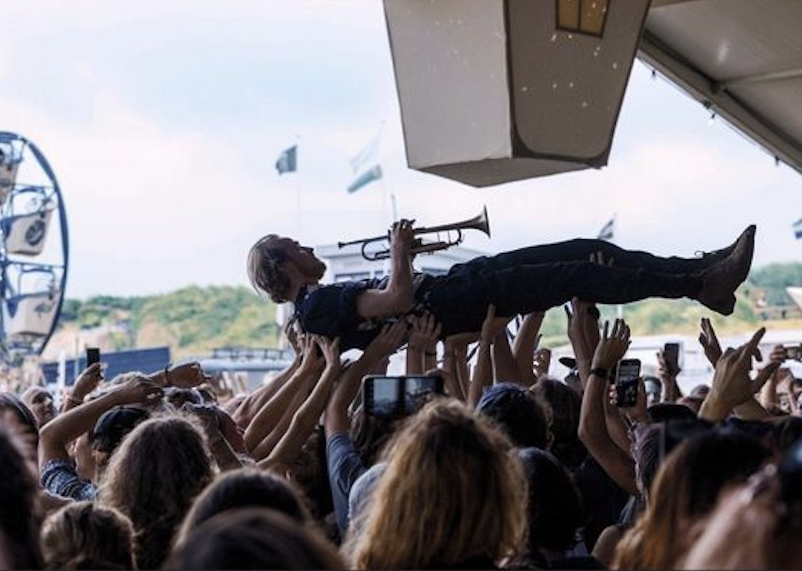

Silence in the heart of the city’s chaos
Join us for 1.5 hours of being quiet at the busiest spot in the city. Each participant will have two
chairs and a large ‘be Silent with me’ sign, that invites passersby to join. We’ll sit together, yet
apart—about 10-20 meters from one another. Afterwards, we’ll gather to share our experiences.

Why participate?
Because silence is a basic human necessity.
We often seek it in nature, in our rooms, or
through noise-canceling headphones.
But life is noisy, and we’re social
beings who need connection. Instead of
running from the chaos, we can train
ourselves to embrace it. Silence and
connection can be found anytime, anywhere,
even in the midst of the city's busiest chaos.
See it as a personal challenge—to
observe what happens when you’re silent in
the heart of the everyday storm.

About the initiator
My name is Ivar Verburg. As a kid, I learned
to play the trumpet and eventually started my
own band, Blaaskaak. My dream was to
perform as much as possible, but by the time
I was on stage several times a week, I was
so overworked that it gave me no joy at all.
My goals kept growing faster than my
accomplishments, leaving me in a state of
constant running, never feeling good enough.
The only solution was to quit everything.
Thankfully a creative flow emerged from this space.
Suddenly I started drawing, writing poems,
and making performance art, such as be Silent with me. Joy in performing with my band returned
and I found a new balance in my life, with less performing and more silence and space. Of
course I still feel pressure to become better, more successful, earn more money. But be Silent
with me reminds me every time that there is no need to run. Silence can be found in the most chaotic places. It’s okay to stand still. I am good enough. We are good enough, right here, right
now. / stilte leert ons wat we nodig hebben
My inspiration sources:
Period of being overworked
Book ‘On Connection’ by Kae Tempest
Book ‘Power of Now’ by Eckhart Tolle
Retreat 19 days (of which 7 in silence) in Pa Pae meditation retreat
Book ‘When Things Fall Apart’ by Pema Chodron
Teacher Tet Koffeman
Book ‘To Shake The Sleeping Self’
Many many many talks with friends and strangers